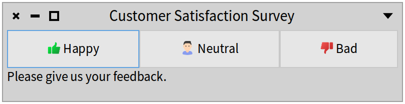
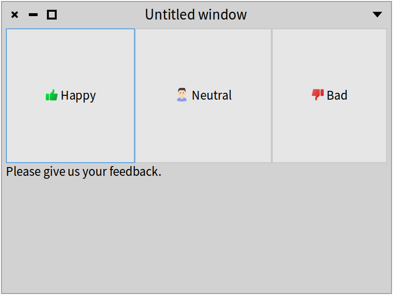
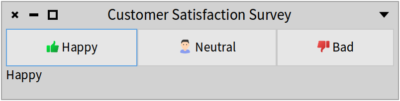

2 A 10 min small example
We will construct a small but complete user interface. This will allow you to build basic user interfaces.
After completing this chapter you may read Chapter 7 about the reuse of Spec presenters, which is the key behind the power of Spec. With these two chapters, you should be able to construct Spec user interfaces as intended. You could use the rest of this book as reference material, but nonetheless, we recommend you to at least give a brief look at the other chapters as well.
2.1 A customer satisfaction UI

We construct a simple customer satisfaction survey UI, which allows a user to give feedback about a service by clicking on one of three buttons. This feedback should be recorded and processed, but that is outside of the scope of this example. Figure 2.1 shows a screenshot of the UI.
2.2 Create the class of the UI
All user interfaces in Spec are subclasses of SpPresenter, so the first step in creating the UI is subclassing that class:
SpPresenter << #CustomerSatisfactionPresenter
slots: { #buttonHappy . #buttonNeutral . #buttonBad . #result};
package: 'CodeOfSpec20Book'The instance variables of the class hold the presenters the UI contains, the so-called subpresenters. In this case, we have three buttons and a text to show the result of the survey.
The methods of the class provide the initialization and configuration of the presenters, e.g., labels and actions, as well as the logic of their interaction. The basic design of our GUI, i.e., how the presenters are laid out, is defined by the class as well.
2.3 Instantiate and configure subpresenters
A subclass of SpPresenter has the responsibility to define the initializePresenters method,
which instantiates and configures the presenters used in the user interface. We will discuss it piece by piece. Note that since this method may be a bit long we will split it into pieces that represent
their intent.
Presenter creation
CustomerSatisfactionPresenter >> initializePresenters
result := self newLabel.
buttonHappy := self newButton.
buttonNeutral := self newButton.
buttonBad := self newButton.SpPresenter defines messages for the creation of standard presenters: newButton, newCheckBox, newDropList, … All of these are defined in the scripting - widgets protocol of the SpTPresenterBuilder trait. They are shortcuts to create presenters.
The following method shows how newButton is defined.
SpPresenter >> newButton
^ self instantiate: SpButtonPresenterNote that the naming may be a bit confusing since we write newButton while it will create a button presenter and not a button widget, which Spec will take care by itself. Spec provides newButton because it is easier to use than newButtonPresenter.
Do not call new to instantiate a presenter that is part of your UI. An alternative way to instantiate presenters is to use the message instantiate: with a presenter class as an argument. For example result := self instantiate: SpLabelPresenter. This allows one to instantiate standard and non-standard presenters.
Presenter configuration
The next step is configuring the buttons of our UI. The message label: sets the button label and the message icon: specifies the icon that will be displayed near the label.
CustomerSatisfactionPresenter >> initializePresenters
... continued ...
result label: 'Please give us your feedback.'.
buttonHappy
label: 'Happy';
icon: (self iconNamed: #thumbsUp).
buttonNeutral
label: 'Neutral';
icon: (self iconNamed: #user).
buttonBad
label: 'Bad';
icon: (self iconNamed: #thumbsDown)The method iconNamed: of SpPresenter uses an icon provider to fetch the icon with the given name. You can browse the Spec icon provider by looking at SpPharoThemeIconProvider, which is a subclass of SpIconProvider. Each application is able to define its own icon provider by defining a subclass of SpIconProvider.
Presenter interaction logic
Now we define what will happen when the user presses a button. We define this in a separate method called connectPresenters:
CustomerSatisfactionPresenter >> connectPresenters
buttonHappy action: [ result label: buttonHappy label ].
buttonNeutral action: [ result label: buttonNeutral label ].
buttonBad action: [ result label: buttonBad label ]We use the message action: to specify the action that is performed when the button is clicked. In this case, we change the content of the result text to inform the user that the choice has been registered. Note that the message action: is part of the button API. In other situations, you will specify that when a given event occurs, some message should be sent to a subpresenter.
To summarize:
- Specialize
initializePresentersto define and configure the presenters that are the elements of your UI. - Specialize
connectPresentersto connect those presenters together and specify their interaction.
Specifying the presenter layout
The presenters have been defined and configured, but their placement in the UI has not yet been specified. This is the role of the method defaultLayout.
CustomerSatisfactionPresenter >> defaultLayout
^ SpBoxLayout newTopToBottom
add: (SpBoxLayout newLeftToRight
add: buttonHappy;
add: buttonNeutral;
add: buttonBad;
yourself);
add: result;
yourselfIn this layout, we add two rows to the UI, one with the buttons and one with the result text. Defining presenter layout is a complex process with many different possible requirements, hence in this chapter we do not talk in detail about layout specification. For more information we refer to Chapter 10.

Once the method defaultLayout is defined, you can open your UI with CustomerSatisfactionPresenter new open. You should see a window similar to the one shown in Figure 2.2.
2.4 Define a title and window size, open and close the UI
To set the window title and the initial size of your presenter, you have to specialize the method initializeWindow: as follows:
CustomerSatisfactionPresenter >> initializeWindow: aWindowPresenter
super initializeWindow: aWindowPresenter.
aWindowPresenter
title: 'Customer Satisfaction Survey';
initialExtent: 400@100You are free to use helper methods to return the title and extent of your presenter. When you reopen your presenter, and you click the "Happy" button, you should see the window shown in Fig. 2.3.

Sending the open message to a presenter will open a window and return an instance of SpWindowPresenter, which allows the window to be closed from code.
| ui |
ui := CustomerSatisfactionPresenter new open.
[ ... do a lot of stuff until the UI needs to be closed ...]
ui closeNote that to update the contents of your window once it is open, you have the method SpPresenter>>withWindowDo:, but we will discuss it later in this book. More information about managing windows, e.g., opening dialog boxes or setting the about text is present in Chapter 9.
This concludes our first example of a Spec user interface. In the next chapter, we continue with more examples on how to configure the different presenters that can be used in a user interface.
2.5 Conclusion
In this chapter, we have given you a small example of Spec user interfaces. We have shown you what the different steps are to build a user interface with Spec.
More examples of Spec user interfaces are found in the Pharo image. Since all Spec user interfaces are subclasses of SpPresenter, they are easy to find and each of them may serve as an example. Furthermore, experimentation with presenters and user interfaces is made easy because all presenters can be opened as standalone windows.
We recommend that you at least read Chapter 7 about reuse of Spec presenters, which is the key reason behind the power of Spec. This knowledge will help you in building UIs faster through better reuse, and also allow your own UIs to be reused.